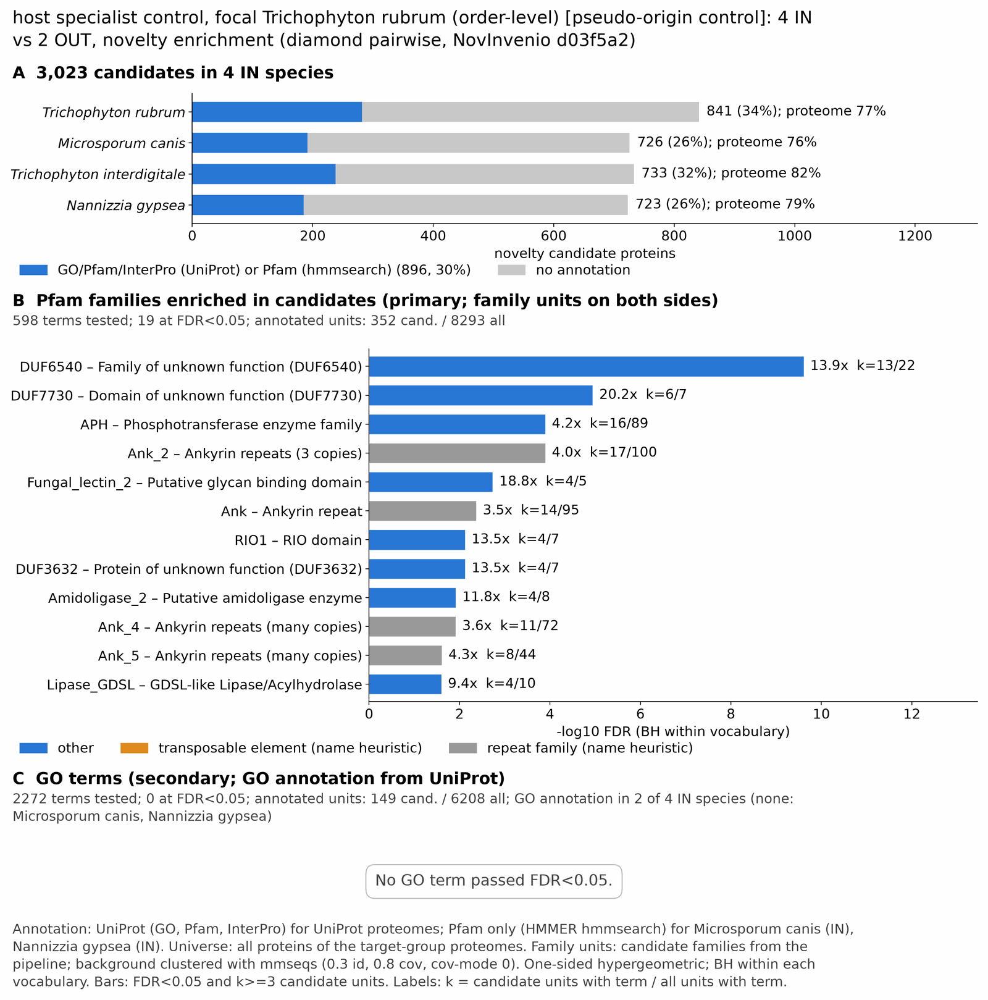

yc pseudo dermatophyte: functional enrichment (novelty)
One-sided hypergeometric test per term; Benjamini-Hochberg FDR within each scope, level and vocabulary. Candidates are the novelty candidates: gene families present in the IN group and absent from the OUT group. Universe: proteome. Background clustered: True (30400 sequences in 11492 clusters, mmseqs easy-cluster --min-seq-id 0.3 -c 0.8). Family level: one unit per candidate family and per background cluster.
Sources: Pfam: 2026-01-27-Pfam38.2; InterPro entries: 110.0; GO: releases/2026-07-26; analysis generated 2026-10-24T14:51:54. Source tables: /bigdata/stajichlab/jstajich/projects/NovInvenio_Investigations/studies/fungi/yeast_convergence/yc_pseudo_dermatophyte/analysis/enrichment/outputs/proteome_clustered.
Full record: PROVENANCE. Run report: report.html.
Related: yeast_convergence: comparison across contrasts
- Annotation provenance is not fully recorded: PROVENANCE.yaml lists the per-species annotation files and their checksums, but not the UniProt release they come from.
- GO results are secondary. GO annotations include computational evidence (IEA, IBA); the GO evidence column shows if a term has non-IEA support.
- Candidate families (pipeline clustering of candidates) and background clusters (mmseqs clustering of the background proteome) are made by different runs, so family-level counts are not fully comparable.
- Low annotation: the candidate set has less than 50% annotation for Pfam 24.9%, InterPro 16.7%, GO 7.1%, any vocabulary 29.6%. Enrichment for these vocabularies has low power.
- GO and InterPro cover only 2 of 4 species: Tricrubr, Tricinte. No GO and InterPro annotation for Micrcani, Nanngyps; these species add no units to the GO and InterPro tests, so those results describe the covered species only.
Summary figure

Annotation coverage
Fraction of proteins with at least one term per vocabulary. Universe = all proteins of the species; candidates = the candidate set.
| Species | Set | Proteins | Pfam | Pfam clan | InterPro | GO | Any |
|---|---|---|---|---|---|---|---|
| Tricrubr | universe | 8617 | 70.7% | 56.2% | 76.3% | 63.9% | 76.6% |
| Tricrubr | candidates | 841 | 23.2% | 18.1% | 32.7% | 13.9% | 33.5% |
| Micrcani | universe | 8690 | 76.3% | 61.3% | 0.0% | 0.0% | 76.3% |
| Micrcani | candidates | 726 | 26.3% | 20.1% | 0.0% | 0.0% | 26.3% |
| Tricinte | universe | 7993 | 77.7% | 62.3% | 81.9% | 69.1% | 82.2% |
| Tricinte | candidates | 733 | 24.7% | 18.8% | 31.5% | 13.2% | 32.5% |
| Nanngyps | universe | 8123 | 79.2% | 63.8% | 0.0% | 0.0% | 79.2% |
| Nanngyps | candidates | 723 | 25.6% | 19.9% | 0.0% | 0.0% | 25.6% |
| ALL_IN | universe | 33423 | 75.9% | 60.8% | 39.2% | 33.0% | 78.5% |
| ALL_IN | candidates | 3023 | 24.9% | 19.2% | 16.7% | 7.1% | 29.6% |
Tests summary
Per vocabulary: terms with FDR < 0.05 / terms tested. Protein level counts proteins; family level counts candidate families and background clusters.
| Scope | Level | Cand. units | Pfam sig / tested | Pfam clan sig / tested | InterPro sig / tested | GO sig / tested |
|---|---|---|---|---|---|---|
| whole_set | family | 1498 | 19 / 598 | 9 / 266 | 13 / 888 | 0 / 2272 |
| whole_set | protein | 3023 | 56 / 1638 | 24 / 395 | 26 / 1670 | 12 / 2949 |
| Micrcani | family | 688 | 5 / 386 | 5 / 220 | 0 / 0 (not_available_no_annotated_units) | 0 / 0 (not_available_no_annotated_units) |
| Micrcani | protein | 726 | 7 / 455 | 7 / 233 | 0 / 0 (not_available_no_annotated_units) | 0 / 0 (not_available_no_annotated_units) |
| Nanngyps | family | 682 | 4 / 383 | 5 / 217 | 0 / 0 (not_available_no_annotated_units) | 0 / 0 (not_available_no_annotated_units) |
| Nanngyps | protein | 723 | 9 / 445 | 10 / 229 | 0 / 0 (not_available_no_annotated_units) | 0 / 0 (not_available_no_annotated_units) |
| Tricinte | family | 695 | 3 / 264 | 5 / 211 | 7 / 666 | 0 / 2008 |
| Tricinte | protein | 733 | 7 / 312 | 8 / 224 | 14 / 789 | 0 / 2101 |
| Tricrubr | family | 808 | 4 / 253 | 4 / 203 | 10 / 662 | 0 / 2036 |
| Tricrubr | protein | 841 | 6 / 288 | 6 / 212 | 13 / 752 | 2 / 2091 |
Top 25 Pfam terms (whole set, family level)
25 rows shown, ordered by FDR then p-value; 19 have FDR < 0.05 (bold).
| Term | Name | k / N cand. | n / M bg | Fold | FDR (BH) |
|---|---|---|---|---|---|
| PF20174 | DUF6540: Family of unknown function (DUF6540) | 13 / 352 | 22 / 8293 | 13.922 | 2.46e-10 |
| PF24864 | DUF7730: Domain of unknown function (DUF7730) | 6 / 352 | 7 / 8293 | 20.194 | 1.13e-05 |
| PF01636 | APH: Phosphotransferase enzyme family | 16 / 352 | 89 / 8293 | 4.235 | 1.27e-04 |
| PF12796 | Ank_2: Ankyrin repeats (3 copies) | 17 / 352 | 100 / 8293 | 4.005 | 1.27e-04 |
| PF18647 | Fungal_lectin_2: Putative glycan binding domain | 4 / 352 | 5 / 8293 | 18.848 | 0.002 |
| PF00023 | Ank: Ankyrin repeat | 14 / 352 | 95 / 8293 | 3.472 | 0.004 |
| PF01163 | RIO1: RIO domain | 4 / 352 | 7 / 8293 | 13.463 | 0.008 |
| PF12311 | DUF3632: Protein of unknown function (DUF3632) | 4 / 352 | 7 / 8293 | 13.463 | 0.008 |
| PF12224 | Amidoligase_2: Putative amidoligase enzyme | 4 / 352 | 8 / 8293 | 11.78 | 0.012 |
| PF13637 | Ank_4: Ankyrin repeats (many copies) | 11 / 352 | 72 / 8293 | 3.599 | 0.012 |
| PF13857 | Ank_5: Ankyrin repeats (many copies) | 8 / 352 | 44 / 8293 | 4.284 | 0.025 |
| PF00657 | Lipase_GDSL: GDSL-like Lipase/Acylhydrolase | 4 / 352 | 10 / 8293 | 9.424 | 0.025 |
| PF17667 | Pkinase_fungal: Fungal protein kinase | 4 / 352 | 10 / 8293 | 9.424 | 0.025 |
| PF30909 | ARB_00926: ARB_00926 immunoglobulin-like domain | 3 / 352 | 5 / 8293 | 14.136 | 0.028 |
| PF30957 | HAC6_N: HAC6 N-terminal domain | 3 / 352 | 5 / 8293 | 14.136 | 0.028 |
| PF13649 | Methyltransf_25: Methyltransferase domain | 8 / 352 | 48 / 8293 | 3.927 | 0.031 |
| PF02171 | Piwi: Piwi domain | 3 / 352 | 6 / 8293 | 11.78 | 0.048 |
| PF00646 | F-box: F-box domain | 7 / 352 | 41 / 8293 | 4.022 | 0.049 |
| PF13391 | HNH_2: HNH endonuclease | 5 / 352 | 21 / 8293 | 5.609 | 0.049 |
| PF00903 | Glyoxalase: Glyoxalase/Bleomycin resistance protein/Dioxygenase superfamily | 3 / 352 | 7 / 8293 | 10.097 | 0.067 |
| PF27599 | CcsR_C: CcsR C-terminal domain | 3 / 352 | 7 / 8293 | 10.097 | 0.067 |
| PF04828 | GFA: Glutathione-dependent formaldehyde-activating enzyme | 4 / 352 | 17 / 8293 | 5.543 | 0.133 |
| PF13606 | Ank_3: Ankyrin repeat | 7 / 352 | 59 / 8293 | 2.795 | 0.310 |
| PF01040 | UbiA: UbiA prenyltransferase family | 2 / 352 | 5 / 8293 | 9.424 | 0.365 |
| PF07985 | SRR1: SRR1 domain | 2 / 352 | 5 / 8293 | 9.424 | 0.365 |
Top 25 InterPro terms (whole set, family level)
25 rows shown, ordered by FDR then p-value; 13 have FDR < 0.05 (bold).
| Term | Name | k / N cand. | n / M bg | Fold | FDR (BH) |
|---|---|---|---|---|---|
| IPR046670 | Family:Protein of unknown function DUF6540 | 9 / 347 | 15 / 7464 | 12.906 | 3.18e-06 |
| IPR011009 | Homologous_superfamily:Protein kinase-like domain superfamily | 36 / 347 | 279 / 7464 | 2.775 | 7.91e-06 |
| IPR036770 | Homologous_superfamily:Ankyrin repeat-containing domain superfamily | 16 / 347 | 70 / 7464 | 4.917 | 2.23e-05 |
| IPR051035 | Family:Mitochondrial inheritance protein 9 | 11 / 347 | 32 / 7464 | 7.394 | 2.23e-05 |
| IPR052766 | Family:Peptidase S41 family protein phomP1/ustP/CSIN1 | 5 / 347 | 5 / 7464 | 21.51 | 3.75e-05 |
| IPR036047 | Homologous_superfamily:F-box-like domain superfamily | 11 / 347 | 45 / 7464 | 5.258 | 6.76e-04 |
| IPR009003 | Homologous_superfamily:Peptidase S1, PA clan | 6 / 347 | 13 / 7464 | 9.928 | 0.002 |
| IPR001810 | Domain:F-box domain | 11 / 347 | 50 / 7464 | 4.732 | 0.002 |
| IPR056632 | Domain:Domain of unknown function DUF7730 | 4 / 347 | 5 / 7464 | 17.208 | 0.002 |
| IPR002110 | Repeat:Ankyrin repeat | 12 / 347 | 63 / 7464 | 4.097 | 0.002 |
| IPR002575 | Domain:Aminoglycoside phosphotransferase | 10 / 347 | 47 / 7464 | 4.577 | 0.004 |
| IPR029068 | Homologous_superfamily:Glyoxalase/Bleomycin resistance protein/Dihydroxybiphenyl dioxygenase | 5 / 347 | 11 / 7464 | 9.777 | 0.006 |
| IPR051678 | Family:Aminoglycoside Phosphotransferase Enzymes | 8 / 347 | 33 / 7464 | 5.215 | 0.007 |
| IPR022025 | Family:Putative amidoligase enzyme | 3 / 347 | 5 / 7464 | 12.906 | 0.055 |
| IPR051531 | Family:N-acetyltransferase | 3 / 347 | 5 / 7464 | 12.906 | 0.055 |
| IPR027268 | Homologous_superfamily:Peptidase M4/M1, CTD superfamily | 3 / 347 | 6 / 7464 | 10.755 | 0.100 |
| IPR036514 | Homologous_superfamily:SGNH hydrolase superfamily | 3 / 347 | 7 / 7464 | 9.219 | 0.158 |
| IPR003615 | Domain:HNH nuclease | 4 / 347 | 15 / 7464 | 5.736 | 0.195 |
| IPR041698 | Domain:Methyltransferase domain 25 | 4 / 347 | 15 / 7464 | 5.736 | 0.195 |
| IPR037523 | Domain:Vicinal oxygen chelate (VOC), core domain | 3 / 347 | 9 / 7464 | 7.17 | 0.301 |
| IPR011057 | Homologous_superfamily:Mss4-like superfamily | 4 / 347 | 18 / 7464 | 4.78 | 0.354 |
| IPR010987 | Domain:Glutathione S-transferase, C-terminal-like | 3 / 347 | 12 / 7464 | 5.378 | 0.619 |
| IPR032710 | Homologous_superfamily:NTF2-like domain superfamily | 3 / 347 | 12 / 7464 | 5.378 | 0.619 |
| IPR012942 | Domain:SRR1-like domain | 2 / 347 | 5 / 7464 | 8.604 | 0.662 |
| IPR051165 | Family:Multifunctional Ankyrin Repeat Domain-Containing Protein | 2 / 347 | 5 / 7464 | 8.604 | 0.662 |
Top 15 GO terms (whole set, family level) — secondary, computational evidence (IEA/IBA) included
15 rows shown, ordered by FDR then p-value; 0 have FDR < 0.05 (bold).
| Term | Name | k / N cand. | n / M bg | Fold | FDR (BH) | GO evidence | Families with non-IEA |
|---|---|---|---|---|---|---|---|
| GO:0044027 | biological_process:negative regulation of gene expression via chromosomal CpG island methylation | 3 / 149 | 5 / 6208 | 24.999 | 0.297 | IEA_only | 0 |
| GO:0045814 | biological_process:negative regulation of gene expression, epigenetic | 4 / 149 | 25 / 6208 | 6.666 | 1.000 | IEA_only | 0 |
| GO:0008236 | molecular_function:serine-type peptidase activity | 5 / 149 | 42 / 6208 | 4.96 | 1.000 | IEA_only | 0 |
| GO:0017171 | molecular_function:serine hydrolase activity | 5 / 149 | 42 / 6208 | 4.96 | 1.000 | IEA_only | 0 |
| GO:0004529 | molecular_function:DNA exonuclease activity | 3 / 149 | 14 / 6208 | 8.928 | 1.000 | IEA_only | 0 |
| GO:0016895 | molecular_function:DNA exonuclease activity, producing 5'-phosphomonoesters | 3 / 149 | 14 / 6208 | 8.928 | 1.000 | IEA_only | 0 |
| GO:0040029 | biological_process:epigenetic regulation of gene expression | 4 / 149 | 29 / 6208 | 5.747 | 1.000 | IEA_only | 0 |
| GO:0000295 | molecular_function:adenine nucleotide transmembrane transporter activity | 2 / 149 | 5 / 6208 | 16.666 | 1.000 | IEA_only | 0 |
| GO:0005346 | molecular_function:purine ribonucleotide transmembrane transporter activity | 2 / 149 | 5 / 6208 | 16.666 | 1.000 | IEA_only | 0 |
| GO:0015217 | molecular_function:ADP transmembrane transporter activity | 2 / 149 | 5 / 6208 | 16.666 | 1.000 | IEA_only | 0 |
| GO:0004222 | molecular_function:metalloendopeptidase activity | 3 / 149 | 17 / 6208 | 7.353 | 1.000 | IEA_only | 0 |
| GO:0004175 | molecular_function:endopeptidase activity | 6 / 149 | 73 / 6208 | 3.424 | 1.000 | IEA_only | 0 |
| GO:0015216 | molecular_function:purine nucleotide transmembrane transporter activity | 2 / 149 | 6 / 6208 | 13.888 | 1.000 | IEA_only | 0 |
| GO:0008233 | molecular_function:peptidase activity | 10 / 149 | 173 / 6208 | 2.408 | 1.000 | IEA_only | 0 |
| GO:0016846 | molecular_function:carbon-sulfur lyase activity | 3 / 149 | 19 / 6208 | 6.579 | 1.000 | IEA_only | 0 |
Actin cytoskeleton controls
Known actin-related families and how many of their proteins pass each filter. Protein ID columns are left out.
| control | pfam_ids | desc_regex | IN_universe | IN_in_matrix | IN_pass_ingroup_rule | candidates | near_miss_out1 | near_miss_out2 | n_Tricrubr | n_Micrcani | n_Tricinte | n_Nanngyps | n_Anid | n_Talastip |
|---|---|---|---|---|---|---|---|---|---|---|---|---|---|---|
| Arp2/3 ARPC2 (P34-Arc) | PF04045 | 4 | 4 | 4 | 0 | 0 | 4 | 1 | 1 | 1 | 1 | 1 | 1 | |
| Arp2/3 ARPC3 (P21-Arc) | PF04062 | 4 | 4 | 4 | 0 | 0 | 4 | 1 | 1 | 1 | 1 | 1 | 1 | |
| Arp2/3 ARPC4 | PF05856 | 4 | 4 | 4 | 0 | 0 | 4 | 1 | 1 | 1 | 1 | 1 | 1 | |
| Arp2/3 ARPC5 (P16-Arc) | PF04699 | 4 | 4 | 4 | 0 | 0 | 4 | 1 | 1 | 1 | 1 | 1 | 1 | |
| Arp2/3 ARPC1 (description only) | arp2/3 complex.*(41|p41|subunit 1)|ARPC1 | 0 | 0 | 0 | 0 | 0 | 0 | 0 | 0 | 0 | 0 | 0 | 0 | |
| Arp2 / Arp3 (description only) | actin-related protein (2|3)\b|\bARP[23]\b | 12 | 12 | 12 | 0 | 0 | 12 | 5 | 0 | 7 | 0 | 7 | 8 | |
| WAVE complex NCKAP1 | PF09735 | 0 | 0 | 0 | 0 | 0 | 0 | 0 | 0 | 0 | 0 | 0 | 0 | |
| WAVE complex CYFIP (FragX_IP) | PF05994 | 0 | 0 | 0 | 0 | 0 | 0 | 0 | 0 | 0 | 0 | 0 | 0 | |
| WAVE complex ABI | PF07815|PF27594 | 0 | 0 | 0 | 0 | 0 | 0 | 0 | 0 | 0 | 0 | 0 | 0 | |
| SCAR/WAVE (SCAR_helical) | PF27569 | 0 | 0 | 0 | 0 | 0 | 0 | 0 | 0 | 0 | 0 | 0 | 0 | |
| WASP family (WH1) | PF00568 | 4 | 4 | 4 | 0 | 0 | 4 | 1 | 1 | 1 | 1 | 1 | 1 | |
| WH2 motif (WASP, WAVE, others) | PF02205 | 8 | 8 | 8 | 0 | 0 | 8 | 2 | 2 | 2 | 2 | 3 | 2 | |
| Formin FH2 | PF02181 | 4 | 4 | 4 | 0 | 0 | 4 | 1 | 1 | 1 | 1 | 1 | 1 | |
| Formin Drf_GBD / Drf_FH3 / Drf_DAD | PF06371|PF06367|PF06345 | 7 | 7 | 7 | 0 | 0 | 7 | 1 | 2 | 2 | 2 | 2 | 2 | |
| Ena/VASP (VASP_tetra) | PF08776 | 0 | 0 | 0 | 0 | 0 | 0 | 0 | 0 | 0 | 0 | 0 | 0 | |
| Coronin (description only) | coronin | 2 | 2 | 2 | 0 | 0 | 2 | 1 | 0 | 1 | 0 | 1 | 1 | |
| Cortactin (HS1_rep) | PF02218 | 0 | 0 | 0 | 0 | 0 | 0 | 0 | 0 | 0 | 0 | 0 | 0 | |
| Myosin 2 tail (Myosin_tail_1) | PF01576 | 0 | 0 | 0 | 0 | 0 | 0 | 0 | 0 | 0 | 0 | 0 | 0 | |
| Myosin head (all myosins) | PF00063 | 16 | 16 | 16 | 0 | 0 | 16 | 4 | 4 | 4 | 4 | 5 | 5 |
Page written by bin/generate_enrichment_page.py.